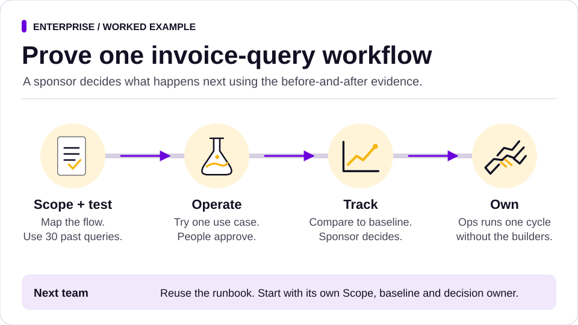

Start here: a COO or operations leader in a large organisation
Start with one decision or recurring task you can review with its owner. Use fictional records to learn the method. For real work, confirm the assistant, data and actions are approved for the task before sharing records.
Choose the work in front of you
| What you have | Start with | First result to check |
|---|---|---|
| One choice for a named leader and a few dated sources | Decision Brief | A one-page recommendation that cites its evidence, states any conditions and names the decider. |
| Updates from several teams and an upcoming leadership review | Weekly Executive Brief | A short agenda that separates decisions from routine progress and names the missing evidence. |
| A process worth trying, with a known baseline or a way to measure it | Pilot Before Scale | A bounded plan with eligible cases, acceptance checks and a stop condition. |
| Completed pilot records and the original acceptance checks | Evidence Pack | A comparison that shows what passed, what missed and what the sponsor can decide. |
| A named team ready to receive a workflow | Enablement Plan | A practice cycle the receiving lead can run independently, with a reviewer and a way to record acceptance. |
Get the skill and its sample from enterprise downloads. If the question is whether the team may use the data or tool, start with enterprise risk review. To practise the whole operating cycle, use the invoice-query workflow.
Try a decision in one chat
Open the three fictional retail records. Paste or attach those records in a fresh chat with the prompt below. If you have the skill installed, ask it to use those same three records.
Draft a one-page decision brief for the retail director from records R1–R3. Give a recommendation and a credible alternative. Cite the wait times and sample sizes. Use dates as written in the records. State the local baseline and staffing checks, who owns each one and what remains for the director to decide. Keep the brief in draft for review.
The draft should report 8 minutes across 120 orders before the trial and 5 across 118 during it. If it recommends a one-store extension, it should make that conditional on a local evening baseline and staffing check. The regional operations lead runs the review and confirms the baseline. The receiving store manager owns the staffing check. The director's decision stays pending. If your assistant cannot read R1–R3, paste the records before judging the draft.
To install the skill or carry the brief through to a recorded decision and handoff, follow the two-round retail exercise.
Try one workflow
Start with one team, one recurring task and the people who own it. Use an approved assistant and source set. A supplier invoice query is a good starting point when an operations lead can name the current queue, approved response policy and escalation path.
| Role | First job | What they leave in the same work record |
|---|---|---|
| Process owner | Choose one query type and name who can review and approve it | Scope, allowed data and actions, and the existing response baseline |
| Operator | Use the approved sources to prepare drafts for review | Draft responses, policy citations and cases that need escalation |
| Reviewer | Check a routine draft and an exception against the agreed criteria | What passed, what needed rework and what still needs a decision |
| Sponsor | Decide what the evidence supports | A dated decision to continue, change, hold or stop |
| Receiving lead | Run the next cycle once ownership is agreed | Evidence they could run it and their acceptance |
Start with the work record and acceptance card. Use the prompt below with approved or fictional sample inputs.
Prepare a draft answer for each supplier query using the attached policy. Cite the source for any commitment. Route disputed charges to the finance owner and show who should pick up each exception. Keep replies as drafts and record what the reviewer needs to decide.
To try it without supplier data, use the fictional invoice-query exercise. Four separate input files take the same queue from the first draft and exceptions through sponsor review, independent ownership and a conditional rollout. The reviewer keeps the answer key separately.
Use Evidence Pack for the pilot review and Enablement Plan when the receiving lead is ready to take over.
For a pilot spanning two organisations, use the partner pilot workflow to record commercial scope, launch approval, communications approval and ownership in the same programme record.
For a batch of account or membership changes, use Reconcile Records Before a Batch Change to give operations, the data owner and the operator one plan to review.
For a risk review, use Review one AI-assisted workflow to bring the scope, acceptance evidence, ownership and stop conditions into your existing decision record.
What SHOTos gives you
- One way of working that business and technical teams share. The six stages (framework) work for a process change in stores, a new system in head office, or both at once.
- Controls a risk function can read. The twelve agent controls and six guardrails state who decides, what agents may do alone and what evidence each piece of work leaves behind.
- Evidence for decisions. For work that changes something, ask for the saved result and the checks the assistant ran. Claim-check can test supported completion claims. Compare the pilot with its baseline before deciding whether to hand it over, change it, stop or wait for more information.
- Ownership before scale. The Own stage makes the team that runs a result self-sufficient before it is copied to the next region or function.
A first 90 days

| Weeks | Stage | What happens | SHOTos assets |
|---|---|---|---|
| 1 to 2 | Scope | Pick one value stream with a visible pain, for example supplier invoice queries. Map the flow, record today's numbers, name the owner. | capture-the-problem, stakeholder-map, baseline |
| 3 | Hypothesise | Write two or three bets with measures. Build an eval set from 30 real past queries with the answers people gave. | hypothesis-card, eval-set |
| 4 to 9 | Operate | A small team delivers one use case in real use, with agents drafting and people approving. Fortnightly show-and-tell to the sponsor. | agree-acceptance, route-the-work, pilot-before-scale |
| 10 | Track | Before and after against the baseline. The sponsor records a decision. | evidence-pack, decision-record |
| 11 to 13 | Own | The operations team runs it without the builders for one full cycle. | runbook, enablement-plan |
Then Sustain and Scale: the next team starts at Scope with its own baseline.
What to give each part of your organisation
| Who | Give them | Why |
|---|---|---|
| Executive assistants and chiefs of staff | The exec-ops pack | A daily brief, inbox triage and decision briefs, all drafts until a person approves |
| Commercial and buying teams | The win-the-work pack | Proposals with every claim sourced; qualification with NUDGE |
| Marketing and communications | The content, social and trust packs | Drafts to an agreed brief, a claims audit before anything goes public |
| Technology | The ways of working, the role agents, claim-check in CI | Specification by example, DORA measures, evidence before merge |
| Risk, legal and data protection | The guardrails and the trust pack | Data classification, exposure checks and an approved purpose, source set and access scope |
What it does not do
- It does not replace your AI policy, your security review or your procurement process. It gives them something concrete to review.
- It does not enforce boundaries inside third-party tools. Rule 1 is followed by the agent and checked by people; claim-check tests claims after the fact.